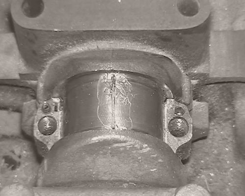

Hướng dẫn sử dụng Plastigauge
Bài viết này hướng dẫn từng bước sử dụng Plastigauge để đo khe hở bạc đạn, trục khuỷu, ổ trục và các bề mặt lắp ghép cơ khí. Nội dung phù hợp cho kỹ thuật viên, thợ máy, sinh viên ngành cơ khí – ô tô và người dùng chuyên nghiệp.


1. Khi nào nên dùng Plastigauge?
Plastigauge đặc biệt hữu ích trong các trường hợp:
- Không thể đưa thước lá (feeler gauge) vào giữa hai bề mặt sau khi lắp, ví dụ: giữa bạc đạn – trục khuỷu, ổ trục lớn, ổ trục tuabin.
- Cần kiểm tra nhanh khe hở thực tế sau khi tiện, mài, thay bạc, thay trục mới.
- Muốn đối chiếu khe hở với tiêu chuẩn sửa chữa trong catalogue hoặc service manual.
- Kiểm tra độ mòn của ổ trục trước khi quyết định thay thế hoặc gia công lại.
Nếu bạn đã đọc bài Cách Plastigauge hoạt động, bài này sẽ tập trung nhiều hơn vào quy trình thực hành và những lưu ý chi tiết khi sử dụng.
2. Chuẩn bị trước khi đo với Plastigauge
2.1. Dụng cụ và tài liệu cần có
- Dải Plastigauge loại phù hợp (PL-A, PL-B, PL-C, PL-D, PL-E, PL-X...).
- Thẻ đo (gauge card) đi kèm Plastigauge.
- Cờ lê lực để siết đúng mô-men theo tiêu chuẩn.
- Dụng cụ tháo lắp: cờ lê, tuýp, tua vít, cảo (nếu cần).
- Giẻ sạch, dung dịch vệ sinh, có thể thêm dầu nhẹ hoặc mỡ mỏng.
- Tài liệu kỹ thuật hoặc service manual của thiết bị/động cơ.
2.2. Chọn dải Plastigauge phù hợp
Mỗi loại Plastigauge đo được một dải khe hở nhất định. Ví dụ:
- PL-A: khe hở rất nhỏ (thường dùng cho bạc trục nhỏ, ổ trục chính xác).
- PL-B / PL-C: cho các ổ trục thông dụng trong động cơ ô tô.
- PL-D / PL-E / PL-X: cho khe hở lớn hơn, ổ trục máy công nghiệp, máy tàu, tuabin…
Hãy kiểm tra dải đo in trên bao bì hoặc thẻ đo để đảm bảo giá trị khe hở cần kiểm tra nằm trong vùng đo của loại Plastigauge bạn sử dụng.
2.3. Một số lưu ý an toàn
- Đảm bảo thiết bị, động cơ đã ngừng hoạt động, không còn áp suất, không nóng.
- Cắt nguồn điện, khóa van, treo biển “không vận hành” nếu làm việc trong nhà máy.
- Đeo găng tay, kính bảo hộ nếu thao tác gần mép sắc, chi tiết nặng.
- Chuẩn bị khu vực làm việc sạch, tránh bụi, tránh rơi mạt kim loại vào ổ trục.
{kind=link}
3. Quy trình sử dụng Plastigauge từng bước
Dưới đây là quy trình chuẩn, bạn có thể áp dụng cho bạc đạn trục khuỷu, bạc biên, ổ trục tuabin, ổ trục trục chân vịt… với vài điều chỉnh nhỏ tùy từng thiết bị.
Bước 1 – Tháo cụm cần đo
Tháo nắp ổ trục, nắp bạc biên, nắp bạc đạn… theo đúng trình tự nhà sản xuất. Ghi nhớ vị trí từng nắp, từng bạc để lắp lại đúng vị trí ban đầu.
Bước 2 – Vệ sinh bề mặt
Lau sạch dầu, mỡ, cặn bẩn, mạt kim loại trên:
- Bề mặt trục (journal).
- Bề mặt bạc / ổ trục.
Bề mặt càng sạch, kết quả càng chính xác. Không để vết xước sâu, gờ sắc – nếu có, nên xử lý trước khi đo.
{kind=link}
Bước 3 – Cắt và đặt dải Plastigauge
Cắt một đoạn Plastigauge ngắn hơn bề rộng ổ trục một chút.
- Đặt dải nhựa dọc theo phương cần đo khe hở, thường là vuông góc với phương quay của trục.
- Có thể dùng một lớp dầu hoặc mỡ rất mỏng để dải nhựa bám nhẹ, tránh rơi.
- Không được gấp, kéo căng hoặc xoắn dải Plastigauge.
Bước 4 – Lắp lại và siết mô-men đúng chuẩn
Lắp lại nắp ổ trục/bạc đúng vị trí. Dùng cờ lê lực siết bu-lông/nut theo:
- Thứ tự siết được khuyến cáo (thường từ giữa ra hai đầu hoặc đối xứng).
- Mô-men xiết trong catalogue hoặc service manual.
Không xoay trục trong suốt quá trình này, để tránh làm trượt hoặc kéo dài dải Plastigauge.
Bước 5 – Tháo ra và quan sát vệt Plastigauge
Sau khi siết xong và giữ nguyên vài giây, tháo nắp ổ trục/bạc ra lại.
- Quan sát dải Plastigauge đã bị ép thành một vệt dẹt.
- Đảm bảo vệt không bị xê dịch, đứt đoạn quá nhiều.

Bước 6 – Đọc kết quả trên thẻ đo
Lấy thẻ đo (gauge card) đi kèm Plastigauge. Trên thẻ đã in sẵn các vệt mẫu với:
- Bề rộng vệt tương ứng với từng giá trị khe hở.
- Đơn vị mm hoặc inch (thường in cả hai mặt).
Đặt vệt Plastigauge cạnh các vạch trên thẻ, chọn vạch có bề rộng gần giống nhất. Đó là khe hở thực tế.
Nếu vệt nằm giữa hai vạch, bạn có thể nội suy để ước lượng khe hở với độ chính xác tốt hơn.
Bước 7 – So sánh với giới hạn cho phép
Dùng catalogue hoặc tài liệu kỹ thuật để kiểm tra:
- Khe hở đo được có nằm trong giới hạn cho phép không.
- Nếu vượt quá giới hạn, cần cân nhắc: thay bạc, mài trục, tiện lại, chọn bạc sửa chữa…
4. Những lưu ý quan trọng khi sử dụng Plastigauge
- Không quay trục sau khi đặt Plastigauge và trong lúc siết.
- Luôn siết đúng mô-men; nếu siết thiếu hoặc quá tay, kết quả sẽ sai.
- Không dùng Plastigauge trên bề mặt
. - Không bôi quá nhiều dầu/mỡ – chỉ cần một lớp rất mỏng để dải nhựa bám nhẹ.
- Đảm bảo dùng đúng thẻ đo đi kèm loại Plastigauge (không trộn lẫn giữa các loại).
- Không dùng lại dải Plastigauge đã bị ép – mỗi đoạn chỉ dùng một lần.
- Ghi chép lại vị trí đo, giá trị đo, nhiệt độ môi trường (nếu cần độ chính xác cao).
5. Các lỗi thường gặp khi dùng Plastigauge (và cách khắc phục)
5.1. Vệt nhựa bị kéo dài, lem nhem
Nguyên nhân:
- Trục bị quay trong lúc siết hoặc tháo.
- Dải Plastigauge đặt không đúng vị trí, bị kẹt cạnh mép.
Cách khắc phục:
- Luôn cố định trục, không xoay sau khi đặt dải nhựa.
- Đặt dải cách mép ổ trục một khoảng nhỏ, không đặt sát mép.
5.2. Kết quả đo chênh lệch nhiều giữa các lần
Nguyên nhân:
- Siết bu-lông không đều hoặc mô-men mỗi lần khác nhau.
- Bề mặt chưa được vệ sinh kỹ, có cặn dầu, mạt kim loại.
Cách khắc phục:
- Dùng cờ lê lực, siết theo đúng trình tự.
- Vệ sinh kỹ bề mặt, thổi sạch mạt kim loại trước khi đo.
5.3. Vệt Plastigauge quá nhỏ hoặc quá rộng
Nguyên nhân:
- Dùng loại Plastigauge không phù hợp (dải đo quá nhỏ hoặc quá lớn).
- Khe hở thực tế nằm ngoài vùng đo của loại Plastigauge đó.
Cách khắc phục:
- Kiểm tra dải đo trên bao bì, chọn loại có vùng đo bao phủ giá trị cần kiểm tra.
- Nếu nghi ngờ khe hở quá lớn, cần kiểm tra thêm bằng các phương pháp khác.
5.4. Không khớp với cảm giác “rơ” khi kiểm tra tay
Nguyên nhân:
- Kiểm tra “rơ” bằng tay dễ bị chủ quan, phụ thuộc kinh nghiệm.
- Có thể tồn tại độ rơ theo phương khác với phương đặt Plastigauge.
Cách xử lý:
- Ưu tiên số liệu đo được từ Plastigauge.
- Nếu nghi ngờ, đo lại ở nhiều vị trí khác nhau quanh vòng tròn ổ trục.
6. Mẹo giúp đo bằng Plastigauge nhanh và chính xác hơn
- Đo ở ít nhất 2–3 vị trí quanh chu vi trục để kiểm tra độ côn, độ ô-van.
- Ghi chú rõ: vị trí ổ trục, số vòng, chiều quay, giá trị đo để theo dõi về sau.
- Kết hợp kết quả Plastigauge với số đo panme đường kính trục để đánh giá tổng thể.
- Đối với động cơ lớn, nên đo trước và sau khi gia công để so sánh trực tiếp.
- Lưu giữ hình ảnh vệt Plastigauge (chụp lại) cho các lần bảo trì sau.
7. Câu hỏi thường gặp khi sử dụng Plastigauge
Plastigauge có dùng lại được không?
Không. Mỗi đoạn Plastigauge chỉ sử dụng một lần. Sau khi bị ép, dải nhựa đã biến dạng nên không thể dùng lại cho lần đo khác.
Có cần bôi dầu/mỡ trước khi đặt Plastigauge không?
Có thể bôi một lớp rất mỏng để dải nhựa bám nhẹ, nhưng không nên bôi quá nhiều. Dầu/mỡ dày có thể làm vệt nhựa “trượt” và làm sai số.
Vệt nhựa còn sót lại có gây hại cho ổ trục không?
Phần lớn các loại Plastigauge được thiết kế để không gây hại cho hệ thống bôi trơn. Sau khi đo, bạn nên lau sạch vệt nhựa bằng giẻ tẩm dầu hoặc dung môi thích hợp.
Nên dùng đơn vị mm hay inch?
Tùy theo tài liệu kỹ thuật mà bạn tham chiếu. Thẻ đo Plastigauge thường in cả mm và inch, bạn chỉ cần chọn mặt phù hợp với catalogue hoặc service manual đang sử dụng.
8. Kết luận
Plastigauge là công cụ đơn giản nhưng cực kỳ hiệu quả để đo khe hở ổ trục và các bề mặt lắp ghép mà các dụng cụ đo truyền thống khó tiếp cận. Khi sử dụng đúng cách, bạn có thể:
- Đánh giá nhanh tình trạng mòn, khe hở của ổ trục.
- Kiểm tra chất lượng sau khi gia công hoặc thay mới chi tiết.
- Giảm rủi ro kẹt bạc, bó trục, rung động quá mức do khe hở không đúng chuẩn.
Nếu bạn cần tư vấn thêm về cách chọn loại Plastigauge phù hợp hoặc cách áp dụng cho trường hợp cụ thể (động cơ ô tô, máy tàu, tuabin, bơm công nghiệp…), hãy liên hệ Plastigauge Việt Nam để được hỗ trợ chi tiết.
Bài viết liên quan

Cách Plastigauge hoạt động
Giải thích nguyên lý dải nhựa bị ép bẹt và cách đo clearance chính xác.
Đọc bài viết »
Ứng dụng trong động cơ ô tô
Tại sao đo bạc đạn – trục khuỷu khi đại tu luôn cần Plastigauge?
Đọc ngay »